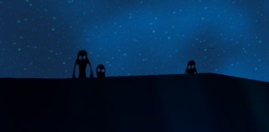
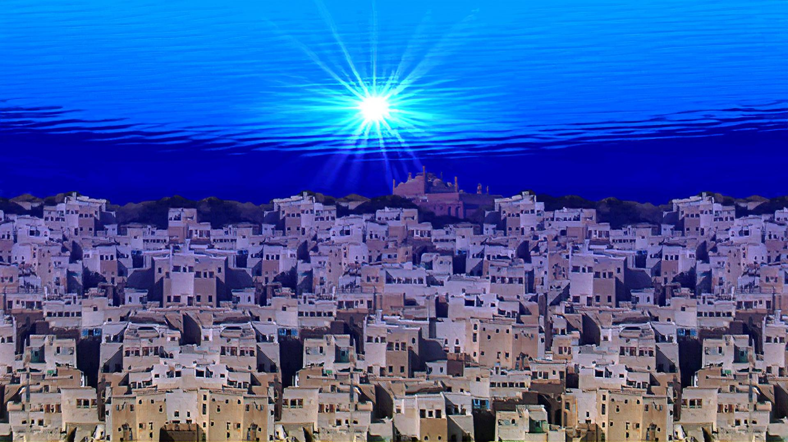

Skyboxes and Fear of the Vast Unknown
A skybox is a technique used by game developers to make a virtual world appear large. It involves creating an image or multiple images and spanning them across a box around the environment. A skydome is the same technique but utilizing a sphere or hemisphere. Many 3D games use this to simulate a much larger space without using resources to render large environments.
Vast spaces are ideal when creating a game centered around exploration or when you want to add ambiance to your environment. However, this can also bring unease when a world is devoid of life. The fear of open spaces is kenophobia, with some relations to agoraphobia, the fear of unfamiliar environments. Both these fears stem from the loss of control in your environment.
Falling Through the World
Escaping the game world's environment is something usually not intended by the developers, nevertheless some players find a way intentionally or not. This experience can be hilarious or unnerving depending on the context, but it definitely breaks immersion. Sometimes there are consequences for going where your aren't supposed to, like Super Mario Galaxy and it's giant black holes that suck the player inside.
Other times, the only consequence is infinite nothingness. I have distinct memories of falling infinitely through poorly developed Roblox places where the only salvation is suicide via the "reset character" button.
Maybe that's the place I developed this uneasiness to large open spaces. SMG's levels in particular have a wide catalog of open spaces that a player is never able to reach or explore. This pairs well with the space setting, a haunting and beautiful atmosphere.

Liminal Virtual Spaces
Other players describe some virtual environments similarly to liminal spaces, the more devoid of life the more unsettling. One of the most popular examples of a liminal digital space is Super Mario 64. Some levels are cited as more liminal or unnerving than others. But the entire game takes place in a giant empty castle, devoid of life.
Discussion around liminal spaces is much more prevalent online than being creeped out by certain sky boxes. Fear around giant open virtual environments is pretty minimal from what I can tell, however there is some discussion online about it. But I want to know are there certain sky boxes that give you chills?
